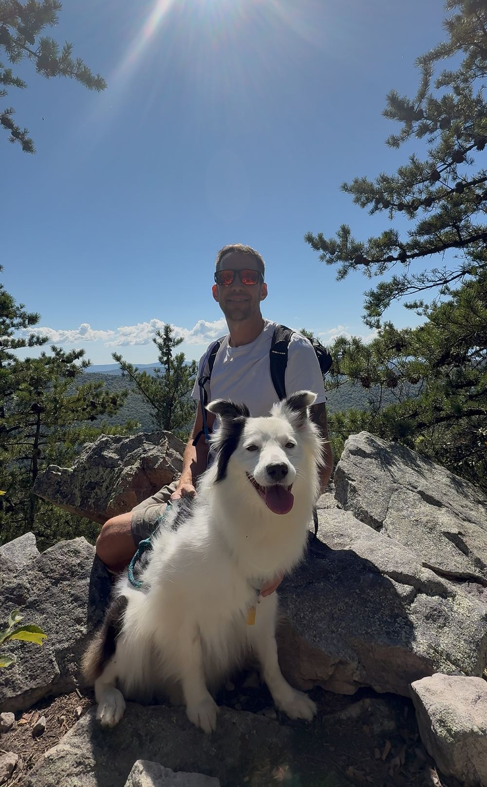
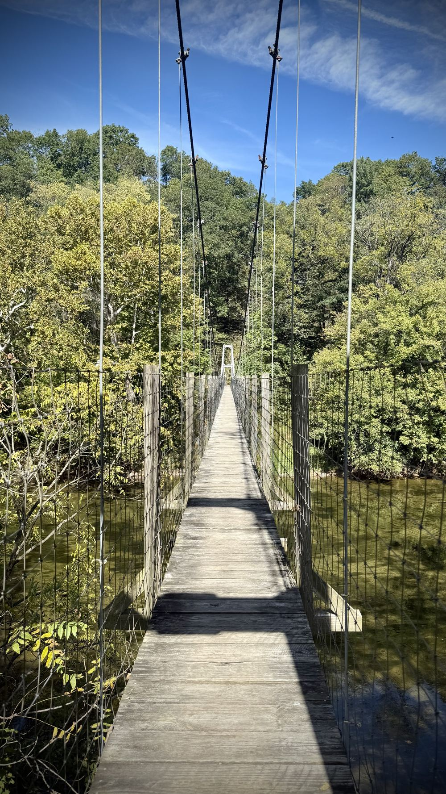
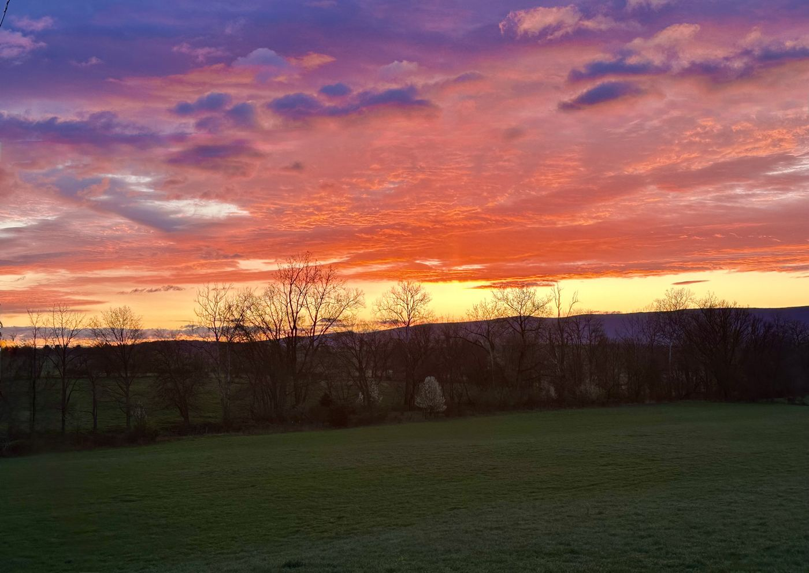
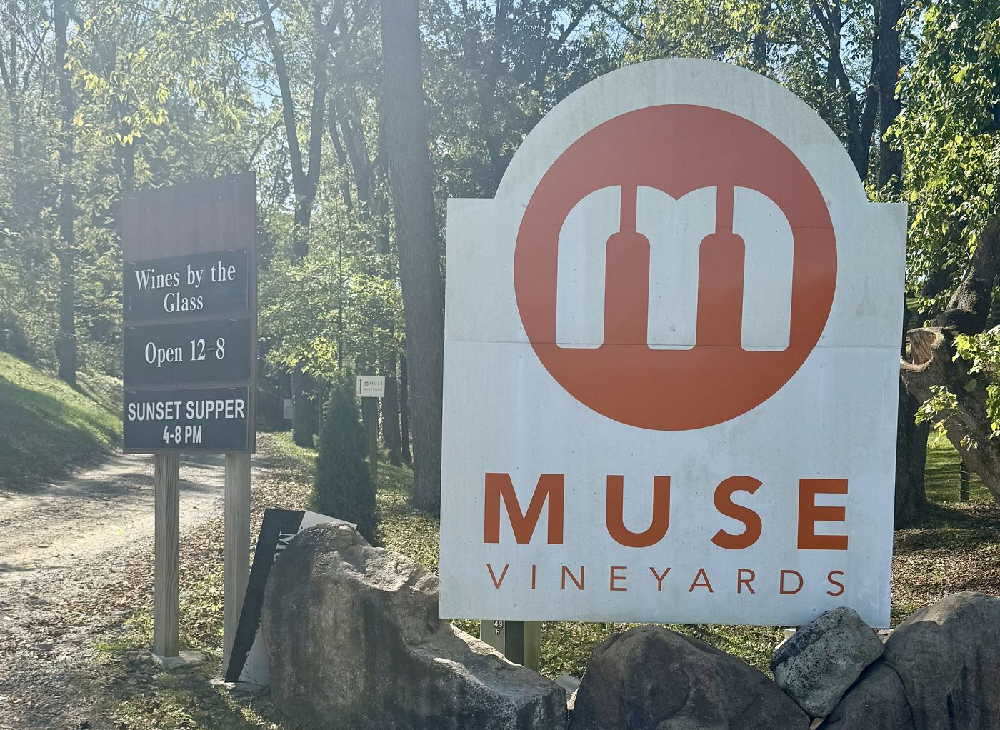
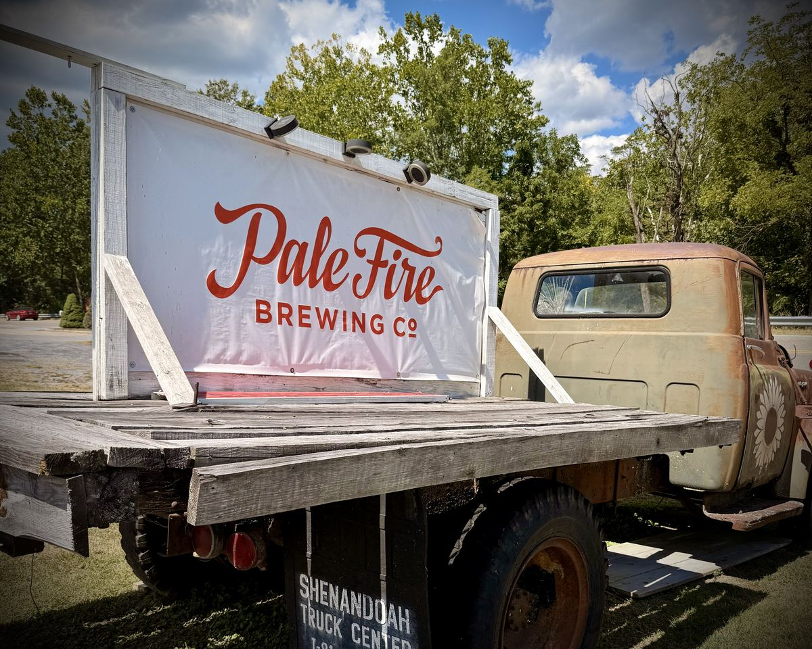
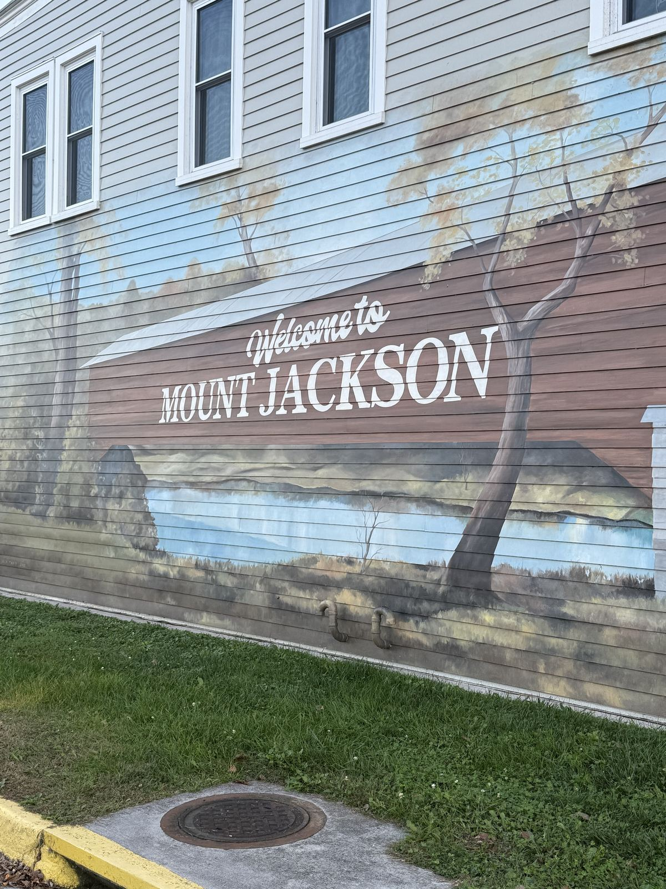

Woodstock Tower Trail
Our pick for sunsets. It's a short, steep climb to an observation tower with valley views.
Trails in the morning. Tastings in the afternoon. Hot tub at night.
From a paved, accessible stroll to a sunset tower climb, these are the trails we send our guests to most.
Our pick for sunsets. It's a short, steep climb to an observation tower with valley views.
Inside Seven Bends State Park, about 17 miles from the farmhouse.
A gentle walk in the woods, perfect for a slow morning.
A short walk with a huge payoff: wide-open views across the valley.
A paved, accessible path with mountain views that's great for all ages.
Waterfalls, overlooks and hundreds of miles of trails along the Blue Ridge.



Also nearby: the Shenandoah Rail Trail for walking and biking, George Washington National Forest, and mountain biking at Bryce Resort (about 8 miles away).
Some of the Shenandoah Valley's best vineyards are only a few country-road miles from the porch.
Our closest winery and an easy first stop.
A guest favorite that often has live music.
Just down the road, perfect for an afternoon tasting.
A local favorite just outside Edinburg.
A classic Shenandoah Valley tasting stop.
Just minutes from Seven Bends State Park, so pair it with a hike.
Craft beer and a laid-back vibe.
A farm brewery out in the countryside.
Craft beer in downtown Woodstock.
Local hard ciders for the non-beer crowd.



Distances are approximate driving miles from the farmhouse. Please check hours before you go.